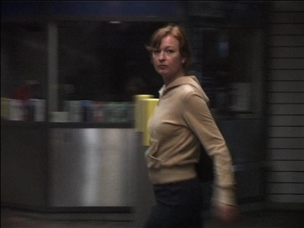

Videoinstallation. 3 mute projections on wall, duration: 11, 8 and 6 minutes.
PLAY AN EXCERPT >>
|  |
b c |
"In the video-piece The Lonely Crowd, she focuses on peoples's attempt to catch a glimpse of their own reflection in the windows and surfaces of the city. Through an argus-mirror we watch people passing by, meeting their own gaze in the mirror surface. The situation draws the bypasser out of the collective stream, giving them a moment of individuality. The work focuses on the ambivalent experience of being both subject and object in the public sphere; of seeing and being seen at the same time." (From the UKS Biennale catalog, written by the curators Ida Kierulf and Helga Marie Norby) 2004 © Katja Høst |
|